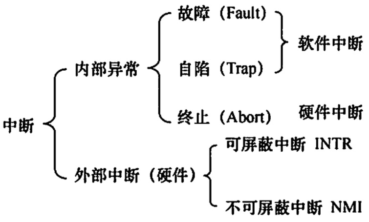
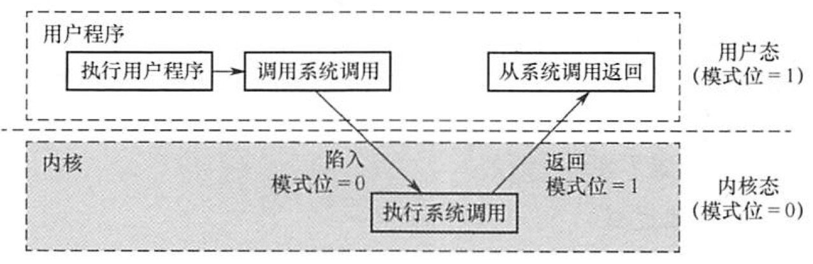

2022.05.21
I/O指令、置中断指令、存取用户内存保护的寄存器、送程序状态字到程序状态字寄存器指令、切换到用户态指令...
切换到核心态指令...
用户态（目态）
核心态（管态、内核态）
内核 = 底层{时钟管理，中断管理，设备驱动..} + 其余{进程管理，存储器管理，设备管理...}
原语：最底层，原子性，运行时间短，调用频繁

系统调用类别，略
运行流程

答案：C，中断！
计算机通过硬件中断机制完成由用户态到核心态的转换。B 显然不正确，核心态程序只有在操作系统进入核心态后才可以执行。D中的中断处理程序一般也在核心态执行，因此无法完成“转换成核心态”这一任务。若由用户程序将操作系统由用户态转换到核心态，则用户程序中就可使用核心态指令，这就会威胁到计算机的安全，所以C 不正确。 计算机通过硬件完成操作系统由用户态到核心态的转换，这是通过中断机制水实现的。发生中断事件时（有可能是用户程序发出的系统调用），触发中断，硬件中断机制将计算机状态置为核心态。
答案：C
答案：C
答案：B
【2018統考真题】定时器产生时钟中断后，由时钟中断服务程序更新的部分内容是(）。
内核中时钟变量的值
A.仅工2 B. 仅江1 C. 仅1，3 D. 1，2，3
答案：D
2020统考真题】下列与中断相关的操作中，由操作系统完成的是（）。
保存被中断程序的中断点
保存中断屏蔽宇 A. 仅1，2 B. 仅1，2、4 C.仅3，4 D.仅2，3，4
当 CPU 检测到中断信号后，由硬件自动保存被中断程序的断点(即程序计数器PC)，I错误。之后，硬件找到该中断信号对应的中断向量，中断向量指明中断服务程序入口地址 （各中断向量统一存放在中断向量表中，该表由操作系统初始化，IIl 正确)。接下来开始执行中断服务程序，保存 PSW、保存中断屏蔽字、保存各通用寄存器的值，并提供与中断信号对应的中断服务，中断服务程序属于操作系统内核，II和IV正确。答案：D